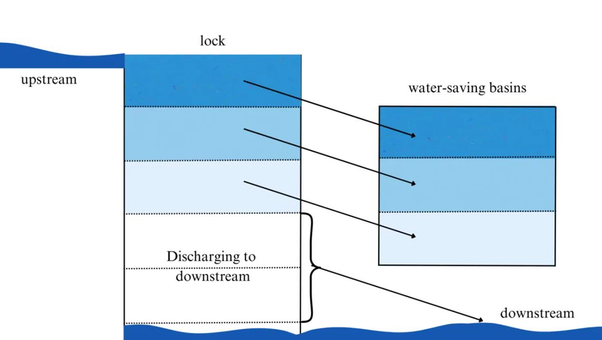
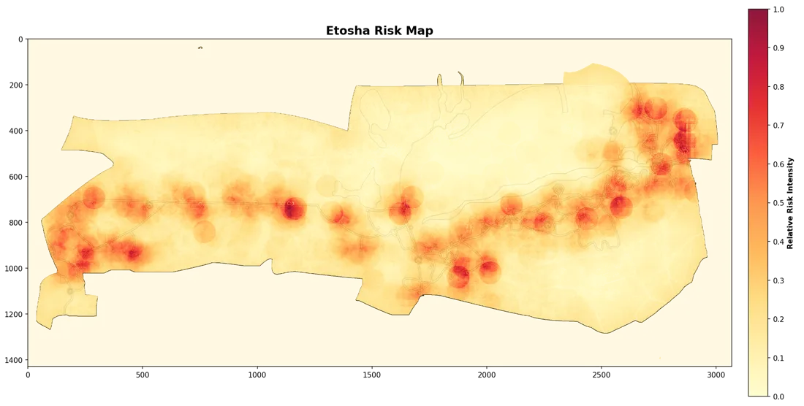

Saving the Panama Canal’s water
From the water exchange between lock chambers and water-saving basins, the optimal number and size of basins, then one cost model for energy, maintenance, water, labour and materials.

A modelling contest hands you a messy real situation and a few days. There is no right answer at the back of the book, only better and worse simplifications.
My question, asked five times: which variables matter, which assumptions can I defend, and how do I know the model is telling the truth?
The same four steps each time. As captain I split the problem into sub-models, built the core model myself and wrote the paper against the deadline.
Five problems, five different kinds of mathematics. Scroll sideways through the papers.

From the water exchange between lock chambers and water-saving basins, the optimal number and size of basins, then one cost model for energy, maintenance, water, labour and materials.

The spinning rope as a catenary using the Jacobi elliptic function sn, drawn at every moment in MATLAB, to find the jump speeds, times and rope lengths that work.

A cellular automaton for fire, smoke and occupants; mixed-integer programming for the fastest route and the number of responders.

A Boltzmann-style expectation model and information theory over 25 years of disasters. Friday the 13th scored 5.56 against a maximum of 18.21.

Risk mapping, topological decomposition, Snake-algorithm patrol loops and a Kalman-filter revisit interval for rangers.
I also edit our school’s applied mathematics journal. Volume 2 is devoted to IMMC.